- Home
- Browse
Motivational Stories
Read the stories we love
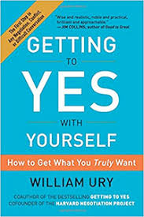 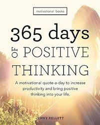 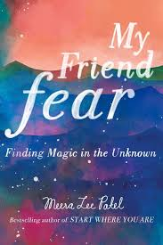 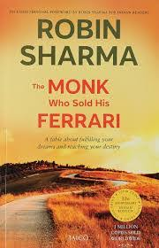 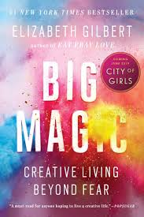 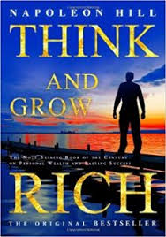 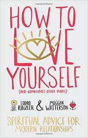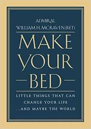 Make Your Bedby William H. McRaven
Ratings
If you want to change the world, start by making your bed. Make Your Bed is a book which outlines the lessons contained in a speech given by Admiral William H. McRaven. In this speech, he shared the 10 principles he learned during Navy Seal training that helped him overcome the various challenges he faced throughout his career.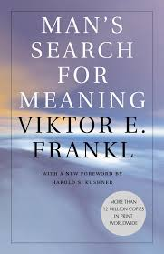 Man's Search for Meaningby viktor E. Frankl
Ratings
Psychiatrist Viktor Frankl’s discusses in-depth his experience with living in Nazi death camps and describes the lessons it taught him about spiritual survival. Frankl puts forth a convincing argument that avoiding suffering isn’t realistic. However, through choosing how we cope with that suffering and the meaning we ascribe to it, we retain the ability to move forward with renewed purpose. This certainly is a book for the generations that anyone can gain value from. Man’s Search for Meaning has been listed as one of the most influential books in America and has currently sold over 10 million copies in twenty-four languages.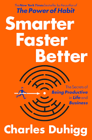 Smarter Faster Betterby Charles Duhigg
Ratings
Charles Duhigg’s Smarter, Faster, Better outlines 8 productivity concepts that help certain companies and individuals accomplish so much more than others. This book outlines the differences between the perspectives of some of the worlds top performers and those who are less successful. These productivity concepts explain how everyday people can improve their everyday lives. Overall, this book can help anyone learn how to succeed and ensure that their average day is productive and not just busy.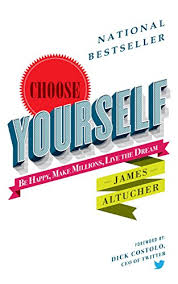 Choose Yourselfby James Altucher
Ratings
Choose Yourself by James Altucher is one of the best motivational books around. James argues that the most valuable asset we have and the one which we should be investing the most time, effort, and resources into is — ourselves. This whole book is about how we can achieve success simply by choosing to invest in ourselves and our growth. This book is sure to inspire and motivate you to invest in developing your talents further and would be an excellent resource for anyone with an entrepreneurial mindset.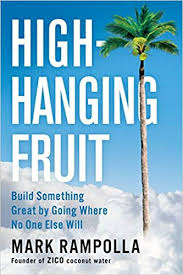 High Hanging Fruitby Mark Rampolla
Ratings
High-hanging Fruit by Mark Rampolla encourages us to reach higher in our life endeavors, especially business if we want to achieve more success and leave our mark on the world. In this novel, the reader is encouraged to find ways to align their passion, purpose, and integrity to achieve success. These lessons can benefit anyone in any field of work and encourage us to stand up for our beliefs and what’s important to us.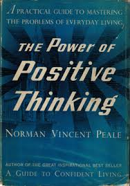 The Power Of Positive Thinking
by Dr. Norman Vincent Peale
Ratings
This international bestseller has sold over 5 million copies worldwide and has helped many people live more fulfilling lives through adopting Dr. Peale’s message of faith and inspiration. Not only does this book help people to achieve happiness and higher levels of life-satisfaction, but it also teaches us that each life is worthwhile.Girls Stop Apologizingby Rachel Hollies
Ratings
When it comes to motivational books, Rachel Hollis nails it! Girl, Stop Apologizing was written primarily for a female audience she was trying to inspire. She wrote this book because all too often, she was seeing women failing to live up to their full potential due to the fear of falling short of perfection and not being enough. She encourages women everywhere to stop talking themselves out of their dreams and to begin fully pursuing them.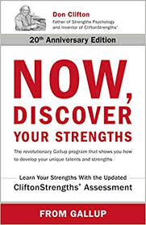 Now, Discover Your Strengthsby Marcus Buckingham &
Donakd Clifton
Ratings
This book takes a unique approach, claiming that not anyone can become anything they want, despite what we were told as children. However, when discussed in-depth, the opinion is quite freeing. This book’s main purpose is to encourage us to ignore those routes which are likely to lead us to dead ends, in favor of pursuing those which we are passionate about and that are more likely to bring us greater success and happiness.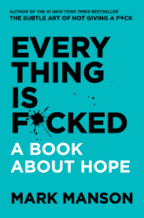 Everything Is Fuckedby Mark Manson
Ratings
Mark Manson follows his previous #1 international bestseller with this guide discussing the problems we currently have surrounding hope. Despite believing that we live in the best time in human history, Mark outlines that everything seems to be pretty messed up. There is global warming, corrupt governments, collapsing economies, and everyone is getting offended far too easily. Mark examines our relationships with money, entertainment, and the internet, and discusses that too much of these good things can destroy us.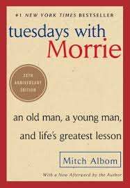 Thusday with Morrieby Mitch Albom
Ratings
This novel which shared the wisdom Mitch Albom received from his college professor Morrie Schwartz, has sold over 12 million copies around the world. In this book, Mitch joins Morrie through the final months of his dying professor’s life every Tuesday to discuss the important messages of life in a truly beautiful and heartwarming fashion. In the end, the two come together to create one final class: lessons on how to live a good life.